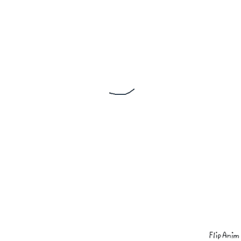

Ziedi ir unikāls dabas fenomens, kas apvieno sarežģītus bioloģiskos procesus ar dziļu emocionālo un kultūras nozīmi.
To galvenais uzdevums ir nodrošināt augu vairošanos, piesaistot apputeksnētājus ar košām krāsām un aromātiem, taču cilvēkiem tie ir kļuvuši par simbolisku valodu,
kas spēj izteikt mīlestību, mierinājumu vai cieņu bez vārdiem. No vēsturiskiem notikumiem, piemēram, tulpju mānijas Nīderlandē, līdz mūsdienu botānikas pētījumiem,
ziedi ietekmē gan globālo ekonomiku, gan mūsu ikdienas pašsajūtu, mazinot stresu un uzlabojot telpas estētiku. To daudzveidība ir pārsteidzoša,
aptverot gan mikroskopiskus ūdensaugus, gan milzīgus tropu ziedus, un katrs no tiem ieņem būtisku vietu Zemes ekosistēmā,
nodrošinot barību kukaiņiem un galu galā veicinot bioloģisko daudzveidību, kas uztur dzīvību uz mūsu planētas.
